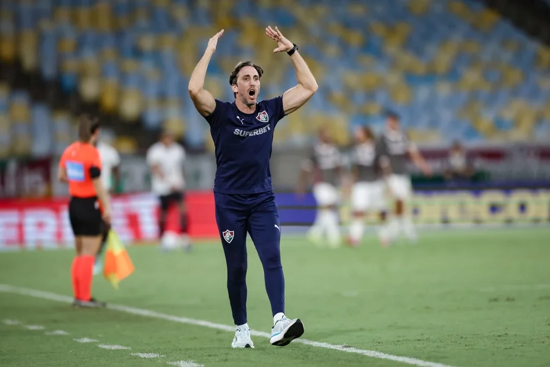
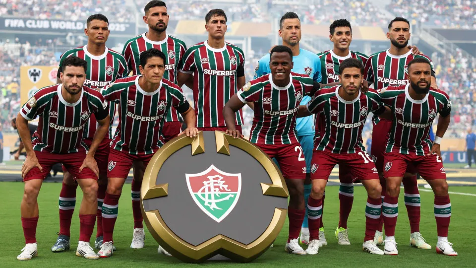
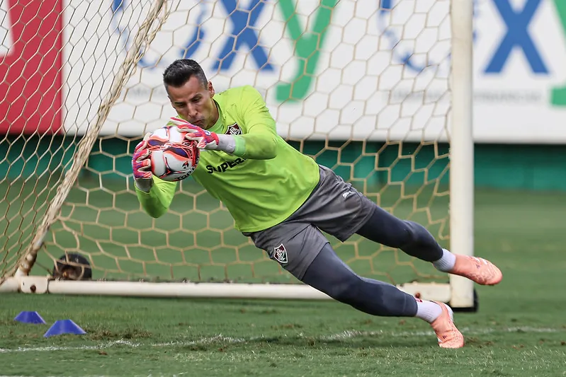
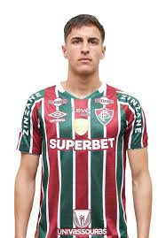
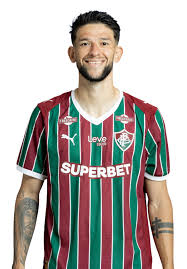
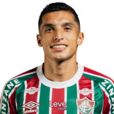
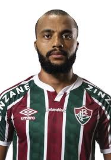

Fluminense chega a 15ª vitória seguida como mandante, confira
A última vez que o Tricolor perdeu como mandante foi no dia 13 de setembro de 2025, contra o Corinthians

Fluminense e Chelsea se enfrentam hoje por vaga na final do Mundial
Após eliminar Inter de Milão e Al-Hilal, o Tricolor encara o Chelsea nesta terça (8), às 16h, em Nova Jersey. PSG e Real Madrid jogam na quarta. O torneio distribui milhões em premiação e pode consagrar o Flu com seu primeiro título mundial

Fluminense prioriza zagueiro e centroavante para fechar primeira janela de 2026
Clube ainda busca alternativas para os dois setores para aumentar opções de Zubeldía

Vasco x Fluminense pela semifinal do Carioca será no Estádio Nilton Santos
Primeiro jogo do mata-mata acontece no próximo domingo

Rossi elege Fábio, do Fluminense, como melhor goleiro do Brasil
Dessa forma, o arqueiro do Rubro-Negro acabou elegendo Fábio, do Fluminense, como o melhor do Brasil em sua posição. Aos 45 anos de idade, o paredão segue em altíssimo nível representando o Tricolor das Laranjeiras.

Goleador na Tailândia, ex-Fluminense sofre racismo, e esposa relata: "Cenário de guerra"
Deni Jr., atualmente no Ratchaburi, foi chamado de macaco e gorila nas redes sociais; perfil da esposa no Instagram também foi inundado de ofensas racistas

Ganso ganha homenagem por 300 jogos no Fluminense e alerta para reencontro com Vasco
Ídolo recebeu quadro e prato referentes à marca antes da partida contra o Bangu

Bernal aproveita brecha, se firma de titular e persegue golaço no Fluminense; veja lances.
Sem Hércules e Nonato, uruguaio aproveita oportunidade e sobe de produção ao lado de Martinelli. Diante do Bangu, bola no travessão foi o mais perto de golaço buscado há tempos
Escalação do Fluminense
Agustín

Bernal
Rene
Freytes

Jemmes
John Kennedy

Kevin

Lucho
Matheus
